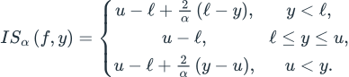

整体概括
真正比较的是两套跑在同一框架里的预报系统
在同一年龄分层传播结构和同一滚动流程下，作者将物理信息神经网络（PINN）与马尔可夫链蒙特卡洛（MCMC）配对，将随机机理模拟与近似贝叶斯计算序贯蒙特卡洛（ABC-SMC）配对。两者输出下一段时间的中位数与预测区间；合成数据预报新感染，伦敦首波预报每周报告死亡数。
对照原文证据
What differs is how each step is implemented: a PINN surrogate of the ODEs system ( 2 ), presented later in this Section, followed by MCMC inference (shown in the violet box in Fig 1 , and described in Section 2.4 ), and a stochastic mechanistic model of the same system with ABC-SMC calibration (shown in the teal box in Fig 1 , and described in Section 2.5 ).For the London COVID-19 data, the observed quantity is weekly deaths and both R_{0} and 1/\delta are estimated; for the synthetic scenarios, the observed quantity is weekly new infections and only R_{0} is estimated.相对排序对调，不代表实际应用过线
同结构合成数据里，机理版总体误差更低，PINN 的预报区间覆盖不足；伦敦实测中，PINN 整体误差低于机理版，但两者都没有超过朴素基线。参数回顾拟合的精度、滚动预测中位数的误差，以及区间能不能包住新观测，分别是三个问题。
对照原文证据
Our comparison shows that neither approach consistently outperforms the other: the advantage of PINN -based methods depends on the setting. In synthetic scenarios, both approaches recover R_{0} accurately and outperform the baseline, with the mechanistic framework being slightly more accurate, and the PINN -based one providing overconfident forecasts. Owing to their admittedly simplified structure, in the first COVID-19 wave in London, both approaches underperform the baseline, yet the PINN -based framework achieves lower forecasting errors than the mechanistic approach.In summary, although both frameworks remain well below the nominal levels, the PINN -based framework outperforms the mechanistic one in both interval- and point-forecast accuracy, while the mechanistic framework has higher coverages. This contrasts with the synthetic scenarios described above, where the mechanistic framework obtained the lowest errors and its intervals were too wide, whereas the under-coverage of the PINN -based framework is consistent across synthetic and real data.Research gap
先让比较对象用相同的信息
作者指出，不少既有结果是与其他深度模型、简化基线比较，缺少与成熟机理流程在共享设置下的直接对照。这项研究刻意不为两套系统分别寻优；它问的是在同一信息截止时间和同一结构起点下，换一条推断与预报路线会怎样。
对照原文证据
However, PINN -based models have typically been tested in isolation, against other deep learning models, or benchmarked against simplified or limited baselines Berkhahn and Ehrhardt (2022) ; Bertaglia et al. (2022) ; Millevoi et al. (2024) ; Qian et al. (2025) , rather than against consolidated approaches under shared, comparable settings. This leaves open the question of whether, and under which conditions, PINN -based methods offer genuine advantages over state-of-the-art methodologies in terms of parameter estimation, forecast accuracy, and uncertainty quantification.Rather than building two forecasting systems independently optimized for operational use, we compare the two modeling paradigms under minimal and shared settings that intentionally exclude any time-varying epidemiological contexts, such as interventions or mobility patterns.共享结构并不等于只换一个模块
两条路线还同时更换了统计推断、观测拟合目标准则以及状态对齐方式。即便作者使用同一拟合窗口，所见差异也属于一整套实现；没有将其余组件固定的拆分实验，就不能把任何优势全部归给神经网络，也不能用它做两种范式的总排名。
对照原文证据
The results should therefore be interpreted as a comparison of two specific implementations of these modeling paradigms, rather than as a definitive ranking of PINNs and mechanistic models in general.Unlike the PINN -based framework, which relies on a Poisson likelihood, the distance between simulated and observed data of the look-back window is measured through Weighted Mean Absolute Percentage Error (WMAPE) , with the same weighting criteria as Eq. ( 1 ), used in Step 2 of the PINN -based framework.The parameter \Delta\tau thus sets the seeding date relative to the observations and, together with I_{0} , plays a role analogous to that of the alignment time \tau_{0} in the PINN -based framework.算法主线

原图由 arXiv 加载；若未显示，可打开下方原图链接。
跟着原图读
- 先看哪里：左侧到中间，三列各做什么
沿左侧共用舱室图的两条箭头分别读紫、青；先一次性准备代理或随机模拟，再在每个新窗口重估参数，最后用后验输入或接受轨迹给出预报。
- 能说明什么：用截止点分开已见与未见
实点在截止时点当时可用，右侧空心点并不参与本次校准。最右是把逐周发出的一周预测排成一列，不能把那一列读成同一次发出的多个提前量。
此图没有量化的比较误差刻度，也没有排除似然、位置对齐和过程噪声的差别；不能由流程图推出谁更准。
预训练一次，滚动发报时重做的是推断
PINN 先在时间和参数构成的域内学习一族常微分方程解。每来一周观测，保持网络权重不变，使用窗口计数的加权 Poisson 似然估计参数；之后将后验样本带回固定代理，读取对应未来时段的分位数。Fig. 1 的实心点与空心点分别代表已知窗口和日后核验对象。
对照原文证据
As in the SIR-INN framework Rama et al. (2026) , we leverage a single feedforward neural network trained once on synthetic data generated according to the temporal-epidemic domain introduced above. The same trained network is then used in all the scenarios considered in this work, both real and synthetic, and at every round of the rolling-window strategy, without any retraining. This stage is schematically reported in Step 1. of the violet box in Fig 1 . All the details about the neural network architecture and its training are described in Appendix 5 in Supporting Information .The MCMC method is implemented assuming as reference model our pre-trained PINN , as prior distributions uniform priors for the parameters to be inferred, and as likelihood a negative Poisson log-likelihood, reflecting the count nature of the observed epidemiological data (i.e., weekly deaths or infections). Consistently with the mechanistic framework, the contribution of each weekly observation to the likelihood is weighted by the same weighting strategy, Eq. ( 1 ), so that more recent weeks have a greater influence.Forecasting future epidemic states reduces to evaluating the pre-trained PINN u_{N} at the estimated parameters with their uncertainty, over the future time window ( Step 3. of the violet box in Fig 1 ).The central panel illustrates a single window: the dashed line separating Steps 2 and 3 passes through the last available observation at time t_{c} , from which the forecasts start; filled circles are the observed data used in Step 2, open circles the future observations against which the forecasts are evaluated.机理版读取被接受轨迹的未来一段
随机机理版不训练神经网络，在离散时间上用舱室内转移的链二项过程生成轨迹。校准依据窗口内的加权误差，保留最后一轮接受的参数和轨迹，再从延伸出去的部分读取预测。这些区间同时受到参数变化与轨迹随机性的影响，与只改变代理输入得到的分位数不是同一统计对象。
对照原文证据
Specifically, we use stochastic chain binomial processes denoted by Bin(X,p) , where X is the number of individuals in a given compartment and p is the probability of transitioning to another compartment within a time step \Delta t .Unlike the PINN -based framework, which relies on a Poisson likelihood, the distance between simulated and observed data of the look-back window is measured through Weighted Mean Absolute Percentage Error (WMAPE) , with the same weighting criteria as Eq. ( 1 ), used in Step 2 of the PINN -based framework.Forecasts ( Step 3. of the teal box in Fig 1 ) are obtained by extending, up to four weeks ahead of the look-back window, the trajectories already simulated for the parameter sets accepted during the Step 2. . Since each trajectory is a single stochastic realization of the model, the forecast distribution reflects both the parameter uncertainty and the stochasticity of the process.关键公式
损失约束近似解，不是构造上的守恒保证
数据项将网络输出拉向数值解；残差项在配置点检验随时间变化是否接近方程。因为两者量级不同，本文对残差额外加权；即使每个输出由激活函数约束在合法区间，也不保证所有舱室的和恰好等于总量，部署时仍应单独监控守恒残差。
对照原文证据
The term \mathcal{L}_{data} is the standard Mean Squared Error (MSE) between the network output and a set of training data (X_{tr},Y_{tr}) , namely \mathcal{L}_{data}=\text{MSE}(u_{N},X_{tr},Y_{tr}) . The term \mathcal{L}_{ODE} instead penalizes deviations from the governing equations of the ODEs system ( 2 ) depending on a so-called residual function R(u,t;\lambda) , Eq. ( 16 ) in Appendix 5 in Supporting Information , and it is expressed as the mean squared value of R evaluated over a chosen set of collocation pointsNotably, by construction Rama et al. (2026) , the implemented PINN learns to respect the physical constraint of population conservation ( 3 ), even though this is not explicitly enforced, either in the neural network architecture or in the training process.错在哪里和区间有多宽要分开
区间评分同时计算带宽和越界罚；加权区间评分把若干覆盖水平及中位数合成一个分数。覆盖率只检查观测有没有进区间，独自无法区分带子过窄和带子整体错位。对照误差时还得区分原始每周人数与论文按同场景基线归一后的无量纲比分。
对照原文证据
The Weighted Interval Score provides a proper approximation of the Continuous Ranked Probability Score (CRPS) Bracher et al. (2021) , jointly capturing the accuracy of the forecast median and the reliability of the prediction intervals in containing the observed value. It extends the IS , originally defined for a single prediction interval, to a weighted combination across multiple nominal coverage levels.Coverage evaluates the calibration of a probabilistic forecasting model, namely the reliability of its prediction intervals, measured as the empirical fraction of times the prediction interval actually contains the observed value.Table 3 : Comparison of overall forecasting performance on the real COVID-19 scenario. Forecasts of weekly deaths for the first COVID-19 wave in London (UK), aggregated over all horizons (from 1 to 4) and rounds. MAE, RMSE, WIS, and IS 80 are normalized by the baseline score.给观察窗内最近的周更大权重
示例：三周原权重从远到近是 1/3、1/2、1，总和为 11/6，归一后依次为 2/11、3/11、6/11。
符号与实现提醒
- i / M
- 观测周索引 / 窗口中的周数
- wᵢ
- 第 i 周的无量纲原权重
原式给的是相对权重；归一在式后正文规定。不要误把 i 当成未来预报提前量。
在拟合数值解的同时处罚动力学残差
示例：若数据项 0.02、方程项 0.0001，按文中权重 100，总损失为 0.03。这些仅用于算式演示。
符号与实现提醒
- ℒdata
- 归一状态拟合数值解的均方误差
- ℒODE
- 配置点上方程残差的平方均值
- α
- 将两类损失放到可比尺度的权重
该权重不是可迁移常数；预测守恒需额外核验。这里的 α 不同于后述分位区间的不覆盖率。
区间没罩住观测会多付多少

示例：80% 区间 [10,20] 人。观测 15 人时只付宽度 10 人；观测 23 人时得 10+(2/0.2)×3=40 人。
符号与实现提醒
- ℓ / u
- 区间下界 / 上界，单位为人
- y
- 实际观测值，与上下界同单位
- α
- 名义不覆盖率的比例
计算时 α 必须大于零；两端闭区间，端点命中不产生额外罚。
同一评分兼顾中位数与多条区间
教学只取一个区间：上例观测 23，中位数 15；权重分别 0.5、0.1，得 (0.5×8+0.1×40)/1.5≈5.33 人。论文实际用多个区间，不是这个示例。
符号与实现提醒
- K
- 纳入评分的区间个数
- w₀ / wₖ
- 中位数绝对误差及第 k 层区间评分的权重
- m / y
- 预测中位数与观测人数
原评分单位同观测；除以同场景同口径基线才无量纲。不同区间集合不能不注明地直接比较。
覆盖率数的是命中次数
三轮预报中有两轮将观测纳入对应闭区间，实盖率就是 2/3；这并不说明漏掉的一轮在上界还是下界。
符号与实现提醒
- M / i
- 可评轮次数 / 其中一轮
- ℓᵢ / uᵢ
- 该轮预测下界与上界
- Cα
- 评估样本的命中比例
分时效记录可评轮次；同时给区间宽度与越界方向，避免把高度相关的发报时点当独立样本。
实验怎么做
同结构合成为可控对照，伦敦首波换了观测量
合成试验先由确定性动力学生成潜在轨迹，再给各周汇总新感染人数加入负二项观测噪声。伦敦用的是按年龄汇总后的报告死亡数；评估在最后一周截断，因此各时效并不等长。图上不同横排的箱子要按各自提前量退回相应的发报周。
对照原文证据
From the deterministic solution we then compute the weekly incidence of infections, namely \mu_{w} for each week w , aggregated across age classes from the susceptible compartments. To mimic the observational noise of real surveillance data, we draw the observed counts (independently for each week)In our analysis, we specifically use the weekly death incidence. Furthermore, we analyze the observed weekly deaths aggregated across age classes to obtain the reference incidence used for parameter inference and model calibration (see Appendix 5 in Supporting Information ), and for the forecast evaluation (Section 2.6 ).Following the rolling-window strategy, both frameworks produce, at each round, probabilistic forecasts from 1 to 4 weeks ahead, using all the past data available up to the current week. The first round starts from the data available up to the week of 2020-03-15, and all the forecasts are evaluated up to the last week of 2020-07-19. As a consequence, the number of rounds decreases with the horizon, from 18 at horizon 1 to 15 at horizon 4.In each panel, every box refers to the week on the x-axis and shows the forecast made for that week, as many weeks earlier as the horizon of the panel, using only the data available at that time. The lighter and darker boxes show the 90% and 50% prediction intervals, respectively, and the horizontal line inside each box shows the median. The observed weekly deaths are shown in black.朴素基线的区间也由历史产生
正文把基线中位数概括为最后已知值，附录给出的实现是从历史周增量及其相反数中有放回抽样，向前累加并把负人数截为零，再从经验分布得到分位数。PINN 结果还按历史窗口内拟合 WIS 在独立链中选择；这不是使用未来观测，却属于校准的计算和选择预算。
对照原文证据
In addition to the two frameworks, we also implemented a baseline model, used as a reference for the evaluation of the forecasts with the following metrics. It is a naive model that does not rely on any epidemiological knowledge and uses the last known value as forecasts across each horizon. The baseline is not part of the comparison between the two frameworks; for this reason, it is not shown in Fig 1 , and its detailed description is reported in Appendix 5 in Supporting Information .where \hat{d}_{i} is the i -th increment selected. The prediction quantiles are computed from the empirical distribution of the trajectories. Since the increments are symmetrized, the median forecast remains approximately equal to the last observed value. As weekly counts cannot be negative, the trajectories are truncated at zero. The error-based metrics of the two frameworks are normalized by the score of this baseline (Section 2.6 ), so that values below 1 indicate better performance than the baseline.We compute the weekly increments d_{i}=y_{i}-y_{i-1} , i=2,\dots,t_{c} , over all the look-back window of the incidence data, without the weighting strategy adopted by the two frameworks, and we symmetrize them by including their opposites, \Omega=\{d_{i}\}\cup\{-d_{i}\} . We then generate N_{\text{traj}}=10\,000 trajectories: for each of them, four increments (one per forecast week) are selected from \Omega with replacement,for each observation window we repeat the sampling procedure over 100 independent chains. We then keep the chain achieving the lowest fitting WIS , evaluating the pre-trained PINN on the past forecasting weeks. Specifically, the WIS metric is weighted: its values over the weeks of the look-back window are averaged using the same weights adopted for the inference提升与证据
合成情形：更窄未必更好
表 1 的四项误差按同一场景基线归一后，机理版整体低于 PINN。场景一 WIS 为 0.191 对 0.224，场景二为 0.094 对 0.126。名义 90% 的区间，PINN 实际覆盖 0.546 和 0.324，机理版均为 1.000；两者偏差方向相反，不能把宽区间的满覆盖解释成完美校准。
对照原文证据
Scenario Model MAE RMSE WIS IS 80 Cov. 50% Cov. 90% Scenario 1 R_{0}=1.5 PINN 0.227 0.283 0.224 0.222 0.343 0.546 Mechanistic 0.189 0.222 0.191 0.191 0.806 1.000 Baseline 1.000 1.000 1.000 1.000 0.333 0.583 Scenario 2 R_{0}=2.0 PINN 0.127 0.162 0.126 0.137 0.206 0.324 Mechanistic 0.094 0.119 0.094 0.099 0.956 1.000 Baseline 1.000 1.000 1.000 1.000 0.412 0.588Table 1 : Comparison of overall forecasting performance on the two synthetic scenarios. Forecasts of weekly new infections, on the noisy synthetic data with R_{0}=1.5 and R_{0}=2.0 , aggregated over all horizons (from 1 to 4) and rounds. MAE, RMSE, WIS, and IS 80 are normalized by the baseline score of the same scenario. Bold indicates the best performance among PINN , Mechanistic , and Baseline within each scenario; for coverage, the value closest to the nominal level.伦敦情形：预测误差变小，仍落后基线
表 3 汇总所有时效和可评轮次，PINN 与机理版的归一 WIS 分别为 2.629 和 3.879；持久性基线按定义为 1.000。名义 90% 的区间实盖分别只有 0.394 与 0.439，基线为 0.788。这说明相对误差排序与实际区间可用性必须分别报告。
对照原文证据
Model MAE RMSE WIS IS 80 Cov. 50% Cov. 90% PINN 2.532 2.926 2.629 2.725 0.076 0.394 Mechanistic 3.577 4.954 3.879 4.144 0.182 0.439 Baseline 1.000 1.000 1.000 1.000 0.621 0.788Table 3 : Comparison of overall forecasting performance on the real COVID-19 scenario. Forecasts of weekly deaths for the first COVID-19 wave in London (UK), aggregated over all horizons (from 1 to 4) and rounds. MAE, RMSE, WIS, and IS 80 are normalized by the baseline score.把图中的时效差异带回表格
Fig. 5 的横轴标的是目标周，越长时效的预测越早发出；增长和高峰附近两个框架多高估，过峰后紫线并不始终更接近实际。附录表 7 的首周 MAE 也是一个反例：机理版 2.032，PINN 为 2.124；整体相对胜出并非每个时效、每项误差都占优。
对照原文证据
Figure 5 shows the forecasts of the two frameworks at the four horizons, against the observed weekly deaths. As in the synthetic scenarios, each panel corresponds to a fixed horizon, and the boxes at a given week summarize the forecast that each framework, PINN -based in violet and mechanistic in teal, had produced for that week, 1 to 4 weeks earlier, with the lighter box for the 90\% interval, the darker one for the 50\% interval, and the line for the median.In this phase, the PINN -based framework produces lower forecasts than the mechanistic one, in both the medians and the intervals, and is therefore closer to the observations, which is consistent with its lower errors in the supplementary Table 7 . After the peak, the pattern reverses: the PINN -based framework predicts a slower decline of the deaths, with forecasts that remain above the observations and above those of the mechanistic framework, whose medians are closer.H1 (18 rounds) PINN 2.124 2.002 1.926 1.689 0.056 0.500 Mechanistic 2.032 2.461 2.112 2.033 0.278 0.500Table 7 : Comparison of horizon-specific forecasting performance on the real COVID-19 scenario. Forecasts of weekly deaths, for the first COVID-19 wave in London (UK), aggregated over all rounds for each horizon (from 1 to 4). MAE, RMSE, WIS, and IS 80 are normalized by the baseline score.
原图由 arXiv 加载；若未显示，可打开下方原图链接。
跟着原图读
- 先看哪里：横轴是目标周，纵轴有倍率
挑目标日期后，按面板时效向前推回到发报周；上两行标 ×10³，下两行标 ×10⁴。纵轴是每周报告死亡人数，不是累积数，不能跨面板直接比较画出的高度。
- 能说明什么：宽区间也会漏掉黑线
浅箱对应 90%，深箱对应 50%，箱内短横线是中位数。看春季高峰黑线是否低于浅箱，便能辨认系统性高估；靠近尾段多数值接近零，要回附录表 7 核对逐时效覆盖，而不是从尾段推断高峰也可靠。
没有干预反事实，不能把错位归因给某一政策；不能用区间在图上更宽推出校准更好。
局限与追问
作者明确承认：短窗比较没有隔离两个因素
伦敦只有一波；两套模型均未显式使用干预或行为变化。附录把全史近因加权换成短窗等权，两个旋钮一起变动。虽然 PINN 的 WIS 与覆盖改善，实验不能判定改善来自舍掉较老观测还是改权重；作者也说明两套实现运行在不同服务器，不能据此给出通用计算优势。
对照原文证据
Second, the real-world evaluation is restricted to the first COVID-19 wave in London. Although this case study provides an application to observed epidemiological data, further analyses across different geographical settings, epidemic phases, and infectious diseases are needed to establish the broader validity of the findings.Fourth, the results are sensitive to design choices such as the length of the look-back window and the weighting strategy (see Appendix 12 in Supporting Information ): the PINN -based framework appears to benefit more than the mechanistic one from fully anchoring its calibration to the most recent observations, but since we explored only one alternative, the individual effects of the two choices cannot be isolated.The first two rows report the results obtained with a look-back window of the last M=5 weeks of observations, without the weighting strategy, while the other two rows report the results of the main analysis (Table 3 ), where all the past data available are used, with the weighting strategy.Nevertheless, the present comparison does not aim to establish a general computational advantage over stochastic mechanistic models, since the two frameworks rely on different inference procedures and computational operations, and were also implemented on different servers, making their computational costs not directly comparable.站内复核：图注与逐时效表的分母不同
正文的逐时效汇总在两种合成数据中分别使用 27 轮和 17 轮；附录两组逐轮图注分别写 28 与 16 轮。这里依表格定义解释其误差与覆盖率，不把附录图注的轮数当成等价分母。未运行代码核对每张图选取的索引，因此不推断哪一处是笔误。
对照原文证据
Table 2 : Comparison of horizon-specific forecasting performance on the two synthetic scenarios. Forecasts of weekly new infections on the noisy synthetic data with R_{0}=1.5 and R_{0}=2.0 , aggregated over all rounds (27 rounds in the first scenario and 17 in the second) for each horizon, from 1 to 4. MAE, RMSE, WIS, and IS 80 are normalized by the baseline score of the same scenario and horizon. Bold indicates the best performance among PINN , Mechanistic , and Baseline within each scenario and horizon; for coverage, the value closest to the nominal level.Figure 6 : Comparison of PINN and mechanistic forecasts of weekly new infections on the noisy synthetic data with R_{0}=1.5 , across 28 forecast rounds (i.e., weeks). In each panel, black dots denote the observed weekly new infections used for model calibration up to the current week, while white dots denote the subsequent four weeks to forecast. Shaded bands show the 50% and 90% prediction intervals of each model over the 1- to 4-week-ahead forecast horizons, and solid lines indicate the corresponding medians.Figure 7 : Comparison of PINN and mechanistic forecasts of weekly new infections on the noisy synthetic data with R_{0}=2.0 , across 16 forecast rounds (i.e., weeks). In each panel, black dots denote the observed weekly new infections used for model calibration up to the current week, while white dots denote the subsequent four weeks to forecast. Shaded bands show the 50% and 90% prediction intervals of each model over the 1- to 4-week-ahead forecast horizons, and solid lines indicate the corresponding medians.区间偏窄的来源还不能归因
合成观测用负二项生成，而 PINN 参数推断使用 Poisson 目标。附录的更强噪声对照没有把观测误差、过程随机性与推断算法独立切换。作者把似然错配视作可能解释；不能把窄区间当成代理更确信，更不能只增加宽度就宣称解决伦敦高峰期的系统性错位。
对照原文证据
The narrow PINN intervals observed in the synthetic experiments may also be influenced by the observation model and the specific noise structure considered. In particular, the negative binomial noise used to generate the synthetic observations, together with the Poisson likelihood adopted for parameter inference, may affect the concentration of the MCMC posterior distributions and contribute to the resulting narrow predictive intervals.The conclusions are similar to those drawn here, although the performance of both frameworks worsens slightly, as expected. One exception is for the PINN -based framework that surprisingly improves the Coverage at 90\% with respect to both the synthetic scenarios generated with a lower level of noise.The uncertainty results in the London case study further emphasize the differences between the synthetic and real settings. Unlike in the synthetic scenarios, the PINN -based framework produces prediction intervals that are not uniformly narrower than those of the mechanistic model. Nevertheless, both frameworks show low empirical coverage, despite the relatively wide intervals produced in several forecasting rounds. However, this is primarily attributable to a displacement of the predicted trajectories with respect to the observations, rather than to insufficient interval width.连接你的研究
将设计迁移到独立的电离层预测对照
未验证建议：在同一电离层状态方程上，比较快速代理和原数值求解。按地磁扰动事件划分数据，每个发报时点只读取已到达的 GNSS TEC 产品，固定双方观测、可用算力及同一持久性基线。设全史与短窗、等权与近因加权两个交叉对照，隔离窗口与权重效应。
以覆盖、误差与延时一并验收
按预报时效交付归一 WIS、预先指定覆盖水平的实盖比例、上下界的越界方向以及发报延迟。用事件分块重采样，避免把同一风暴的邻站与相邻窗口当作独立样本。若只增加覆盖却牺牲峰段误差或时延，或留出事件排序不稳，不认定代理更适合实时预报。
来源与边界
Fig. 1 和 Fig. 5 仅通过固定版本 arXiv 官方 SVG URL 嵌入，保留五位作者、完整英文图注及原文定位。arXiv 非独占分发许可不是本站转载授权；未改画或镜像图件、PDF 或全文，另行转载需获得许可。中文读图说明为单独评述；读者网络可能影响原图加载，可点击原文核查。
对照原始英文摘要
收录历史：2026-11-17
原文许可：查看本版本许可 ↗；外部嵌入不等于任意转载授权。